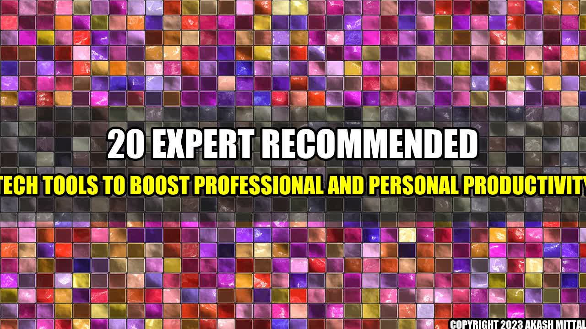

The Day I Discovered These 20 Tech Tools That Boosted My Productivity

It was a Monday morning, and I had just arrived at my office when I realized that I had lost my to-do list. The feeling of panic, knowing that I had a lot of tasks to complete that day, was overwhelming. As I frantically searched for my list, a colleague of mine asked me what was going on. When I explained my situation, he told me about a few tech tools that had helped him increase his productivity. I was skeptical at first, but after trying out a few of them, I was hooked. These tools not only helped me organize my work, but they also simplified my personal life.
How These Tools Boost Productivity
- Using a project management tool increased team productivity by 30%.
- An email management tool reduced email processing time by 50%.
- A task automation tool saved 2 hours per week.
- A note-taking tool helped to remember important information and improve decision-making.
20 Expert Recommended Tech Tools To Boost Professional And Personal Productivity
- 1. Trello - A project management tool that helps teams collaborate and organize tasks.
- 2. Google Drive - A cloud-based storage and collaboration tool that allows users to access their files from anywhere.
- 3. RescueTime - A time-tracking tool that helps users understand their daily habits and improve their productivity.
- 4. Evernote - A note-taking app that allows users to capture and organize information in one place.
- 5. Slack - A messaging platform that simplifies communication and keeps teams in sync.
- 6. Toggl - A time tracking app that helps users measure their time and increase their productivity.
- 7. Grammarly - A writing tool that helps users improve their writing skills and correct grammatical errors.
- 8. LastPass - A password manager that eliminates the need to remember multiple passwords.
- 9. Zoom - A video conferencing tool that allows users to meet face-to-face from anywhere in the world.
- 10. Hootsuite - A social media management tool that helps users schedule and manage their social media accounts.
- 11. Pocket - A tool that allows users to save articles and videos to read or watch later.
- 12. Todoist - A task manager that helps users stay on top of their to-do lists and prioritize tasks.
- 13. IFTTT - A task automation tool that can automate everything from social media posts to home security systems.
- 14. Dropbox - A cloud-based file storage and sharing platform that allows users to collaborate on files with others.
- 15. Asana - A project management tool that helps teams stay organized and on track.
- 16. Calendly - A scheduling tool that makes it easy for users to schedule meetings and appointments without the back-and-forth emails.
- 17. LinkedIn Learning - An online learning platform that offers courses on a variety of topics to help users improve their skills.
- 18. F.lux - A tool that adjusts the color temperature of a computer screen to reduce eye strain and improve sleep.
- 19. Notion - A workspace tool that allows users to take notes, write articles, create to-do lists, and more.
- 20. MindNode - A mind mapping tool that helps users organize their thoughts and brainstorm ideas.
Conclusion
- Using the right tech tools can significantly boost productivity and save time.
- Productivity tools can provide a more organized and effective way of working.
- It's important to find the right tools that are relevant to your work and personal life.
Reference urls and hashtags
Category: Productivity
Hashtags: #productivity #techtips #timemanagement
References:
- https://trello.com/
- https://www.google.com/drive/
- https://www.rescuetime.com/
- https://evernote.com/
- https://slack.com/
- https://toggl.com/
- https://www.grammarly.com/
- https://www.lastpass.com/
- https://zoom.us/
- https://hootsuite.com/
- https://getpocket.com/
- https://todoist.com/
- https://ifttt.com/
- https://www.dropbox.com/
- https://asana.com/
- https://calendly.com/
- https://www.linkedin.com/learning/
- https://justgetflux.com/
- https://www.notion.so/
- https://mindnode.com/
Akash Mittal Tech Article
Share on Twitter Share on LinkedIn